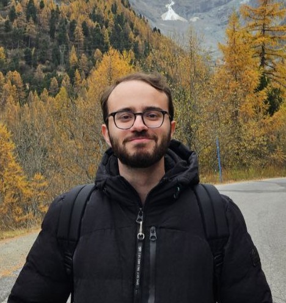

Bassam El Rawas
PhD Student · Image Processing & Applied Mathematics
EPFL — École Polytechnique Fédérale de Lausanne
I am a second-year PhD student at the Biomedical Imaging Group at EPFL, supervised by Prof. Michael Unser and Prof. Dimitri Van De Ville. My work lies at the intersection of signal/image processing and applied mathematics. I am interested in inverse problems, in particular, in spline- and flow/transport-based methods for solving them.
e-mail address: bassam(dot)elrawas(at)epfl(dot)ch
Publications
-
Flower: A Flow-Matching Solver for Inverse Problems
ICLR, 2026
-
Multivariate Hawkes Processes for Sparse Estimation of Neural Networks Intensities
EPFL Semester Project, 2024
Teaching
Courses I have contributed to as a teaching assistant at EPFL. I also regularly supervise master students for semester projects and master theses, if you're interested, feel free to reach out!
- Fall 2025, 2026 Signals and Systems I Head Teaching Assistant
- Spring 2025, 2026 Signals and Systems II Teaching Assistant
- Fall 2020 → Fall 2025 Analysis I, Analysis II, Linear Algebra, Signals and Systems, Principles of Digital Communications, Stochastic Models for Communications, Image Processing Student Assistant
Misc
The background image on this website is randomly drawn from 10 photographs I took in Lausanne, at the easternmost point of Madeira's mainland, in Egypt's White Desert, in Rabat and in Casablanca. See if you can spot all 10!